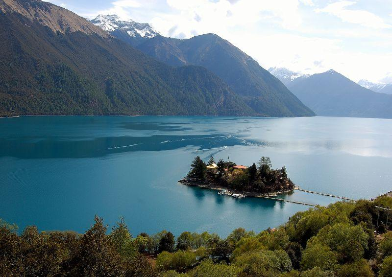
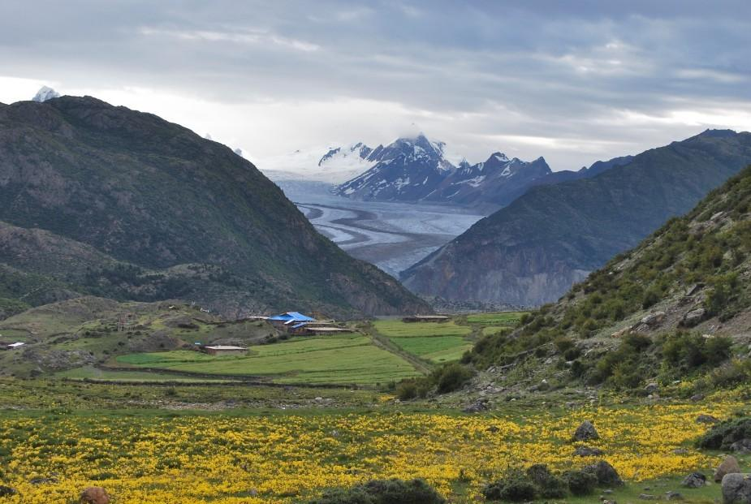
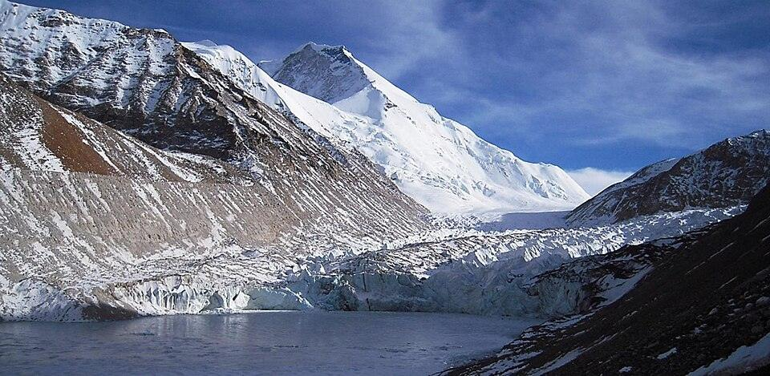

顺路看雅鲁藏布江
24日江河汇流、佛掌沙丘和索松沿途可看雅江；B线以到索松等日照金山为优先，沿途停靠视落地时间调整。去羊湖、普莫的岗巴拉方向，以及山南返程的实际沿江路段，遇到开放停车点可停15–20分钟。巴松措到拉萨主要沿尼洋河、拉萨河。
11天 · 10晚跨一个年，走一段远路
最晚12月29日到拉萨A线29日到 · B线27日到
新措 ＋ 白马林措两段核心徒步保留
冬季行程，留些余地车程为估算 · 开放状态临行核实
先选路线，再把每一天摊开聊。
取舍摆在一起，比单看景点数量更好决定。
| 讨论重点 | A 向冰川深处 | B 给雪山多一点时间 |
|---|---|---|
| 东线冰川 | 来古／雅隆优先，白普、朱西、嘎隆拉可替代 | 取消波密、然乌，巴松措后直达拉萨 |
| 巴松措安排 | 28日新措，住结巴；29日上午主湖简游 | 25日结巴民宿，26日主湖＋松赞，27日新措后转拉萨 |
| 抵达拉萨 | 12月29日 | 12月27日晚 |
| 拉萨 city walk | 30日布宫、八廓街 | 28日老城与布宫外景；29日预约入宫、自由慢逛 |
| 羊湖＋普莫雍措 | 12月31日，沿途观景后住洛扎 | 12月30日，沿途观景后住洛扎 |
| 白马林措 | 1月1日；没有额外机动日 | 12月31日；1月1日留机动，2日必须回拉萨 |
| 山南人文 | 不加泽当、桑耶寺 | 仅31日白马已完成，才把1日机动改为转泽当，2日人文游览后回拉萨 |
| 最需要接受的取舍 | 长途转场较多，白马遇坏天气时余量少 | 27日新措徒步叠加长途转场，可能晚到；若1日补白马，就取消山南人文 |
历史照片仅展示景观特征，
不代表年底冰况或当前可达。



不用现在决定一切。先确认路线偏好，
再把要核实的事项一件件划掉。
01更想看冰川，还是给白马林措多留天气余量？
02能接受A线连续几天较长的车程吗？
03白马顺利完成后，要不要去山南看寺院和宫堡？
分享链接包含当前路线与备选设置。个人备忘仅保存在当前设备，复制方案时会一并带出；没有实时多人同步。
24日江河汇流、佛掌沙丘和索松沿途可看雅江；B线以到索松等日照金山为优先，沿途停靠视落地时间调整。去羊湖、普莫的岗巴拉方向，以及山南返程的实际沿江路段，遇到开放停车点可停15–20分钟。巴松措到拉萨主要沿尼洋河、拉萨河。
羊湖加入拉萨→浪卡子→普莫雍措→洛扎这一天：岗巴拉与顺路湖岸共45–60分钟，不另走日托寺、完整环湖支线。色季拉—鲁朗不安排专门游览。B线27日新措徒步后直接到拉萨，约7–9小时车程加2–3小时徒步，可能晚到，不再加景点。两湖均按岸边观景安排。
24日尽量中午前到林芝。B线25日结巴小民宿、26日松赞巴松措林卡均为计划住宿，需落实预订。28日周一按现行公告布宫闭馆，29日入宫；12月19日起关注官方放票，22日复核。洛扎段提前办妥所需边境通行手续。
路线是讨论计划，不是景区开放承诺，也未包含已订机票、住宿。下列公告和参考资料需在出发前复核。
照片来自历史影像，不保证冬季呈现或当前可达。图片经原资料缩小、压缩，页面采用裁切展示；各图继续遵循原许可，许可不扩展到独立代码和行程内容。